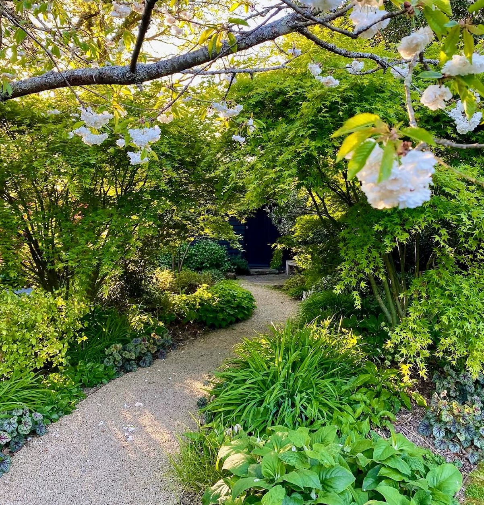
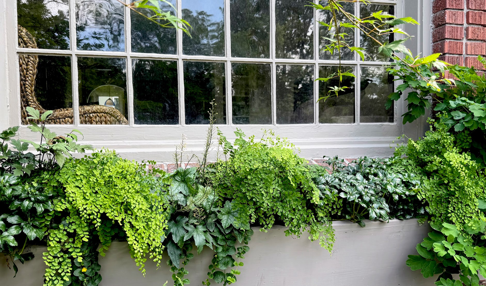
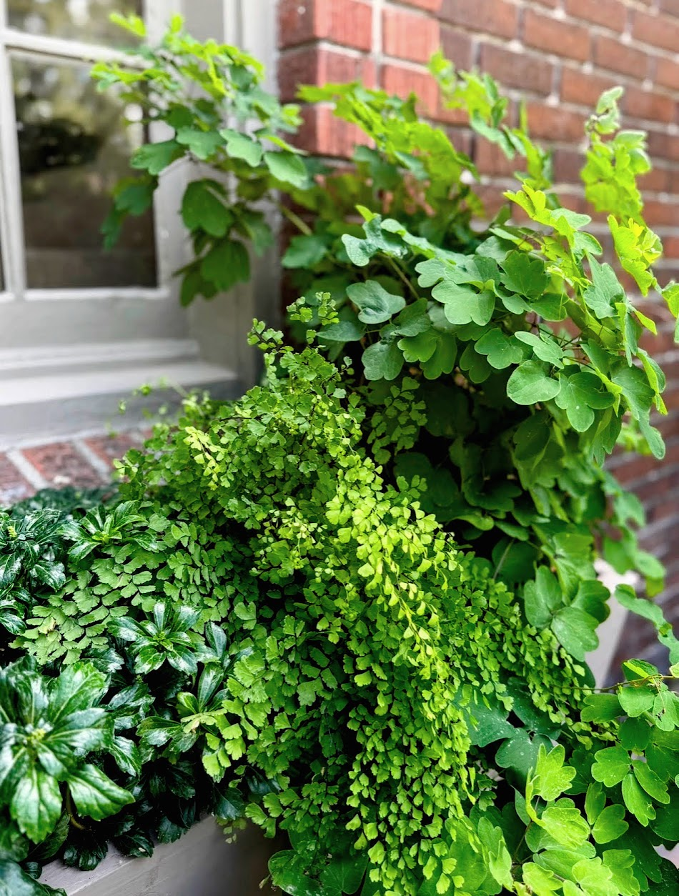

The place
The Hillside House is a private garden where the use of simplicity was enormously powerful. The house, built in the late eighteen-hundreds, was on the formal side. The use of essential geometric shapes like squares and rectangles was used to frame different areas of the garden. This not only helps ground the garden, but also plays an important role in establishing an easy organic flow. The property includes natural gravel pathways that reinforce a deep sense of rusticity, though the landscape faces a challenging climate where summer temperatures regularly climb over 100 degrees Fahrenheit.
The brief
The client requested a garden that had a sense of place and time — one whose personality would develop over time. They wanted to be in the garden, tending to it as they moved through the various elements — they wanted to explore possibilities, to change the feel of things. It had to be tailored to a contained space where plants are free to create their own forms, allowing the owner to experiment with the art of capturing seasons and infusing shades of green into the neutrals of the interior, bringing the outdoors inside in a way that felt appealing from a sustainability perspective.
The design
The masterplan grounds each space without distracting from the surrounding views, arriving at simple, appropriate design routes. The layout introduces natural gravel pathways to give the experience of walking the property a unique feel, while a versatile layout of movable potted plants allows the owner to frequently try out new ideas and arrange them on tables indoors for parties.
The Ground Cover Matrix: The foundational structure relies on a hardy ground cover matrix of Sesleria autumnalis spanning to establish a dense, resilient, semi-evergreen base that thrives in tough conditions. Within this matrix, a sequence of highly judicious plant selections emerges across the seasons: